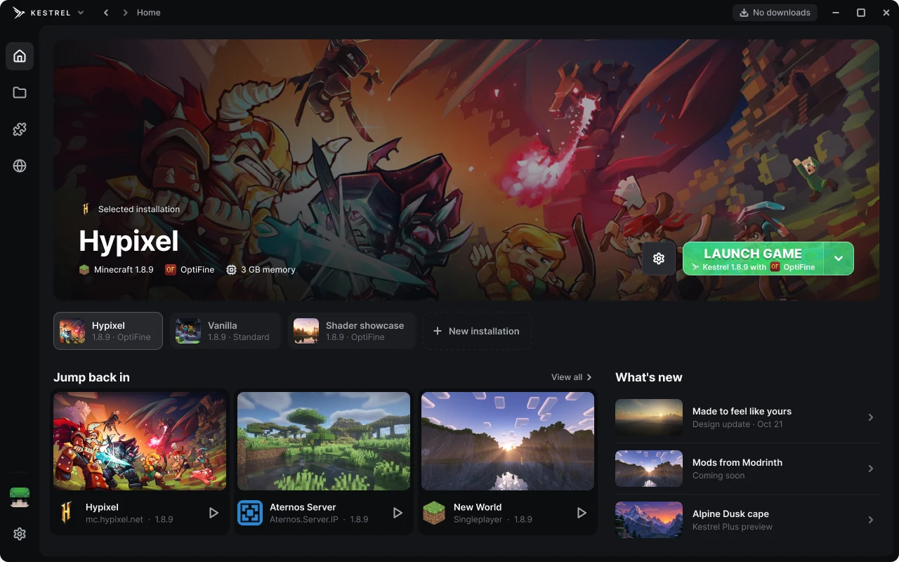

KESTREL
KESTRELLaunch Control
A live window for every launch: each step, the full console, memory and CPU, and plain-English help when something crashes.
One launcher for every way you play Minecraft. Keep separate setups for each version, add mods, packs and shaders in a click, and see exactly what your game is doing while it loads. Starting with 1.8.9, with every version on the way.

A live window for every launch: each step, the full console, memory and CPU, and plain-English help when something crashes.
Run OptiFine's own installer and Kestrel wires it in. Zoom, shaders and smoother frames, no guesswork.
Search resource packs, shaders and mods. Every download is checked against its hash, and updates show up on their own.
Copy your keybinds, server list and packs from .minecraft in one go. Nothing in your old folder is touched.
Every world with its icon, mode and last played date. Back one up as a zip in a second.
Show what you're playing on your profile, and sign in with Discord for free cosmetics like capes when they launch.
Your password never touches Kestrel. Microsoft and Discord sign-in happen on their own pages, and what Kestrel saves is encrypted for your Windows account. No analytics, no ads. Privacy policy